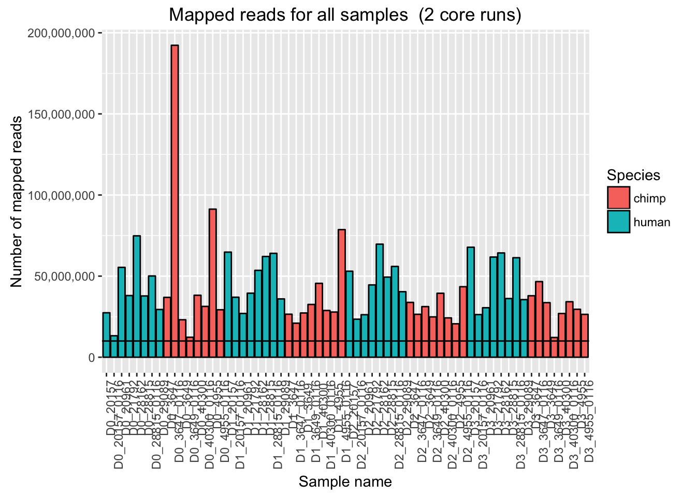
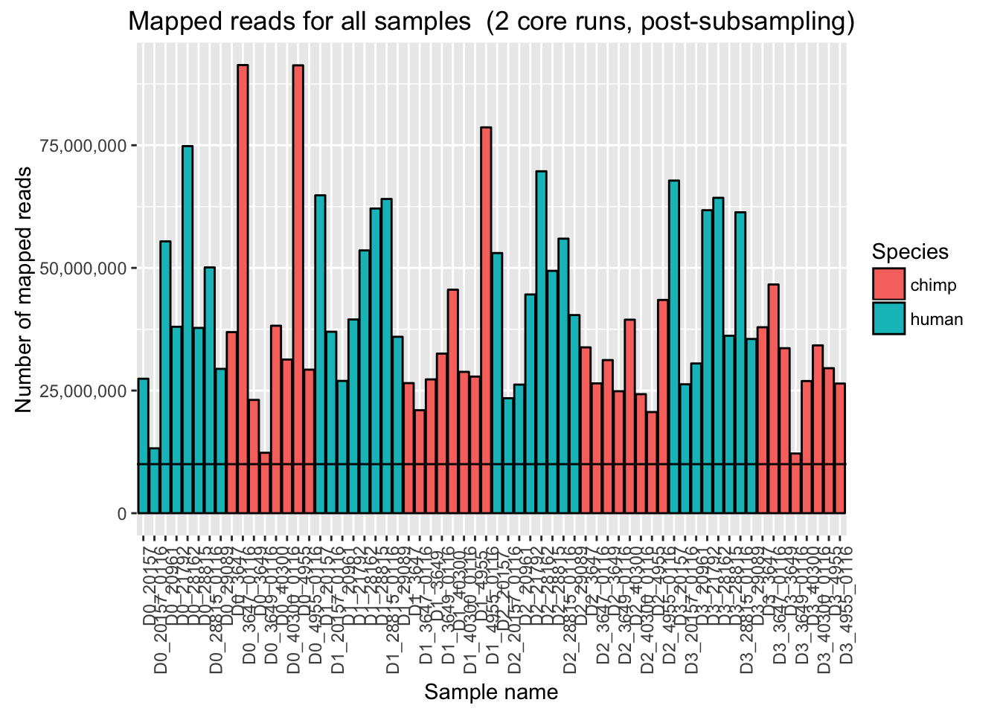
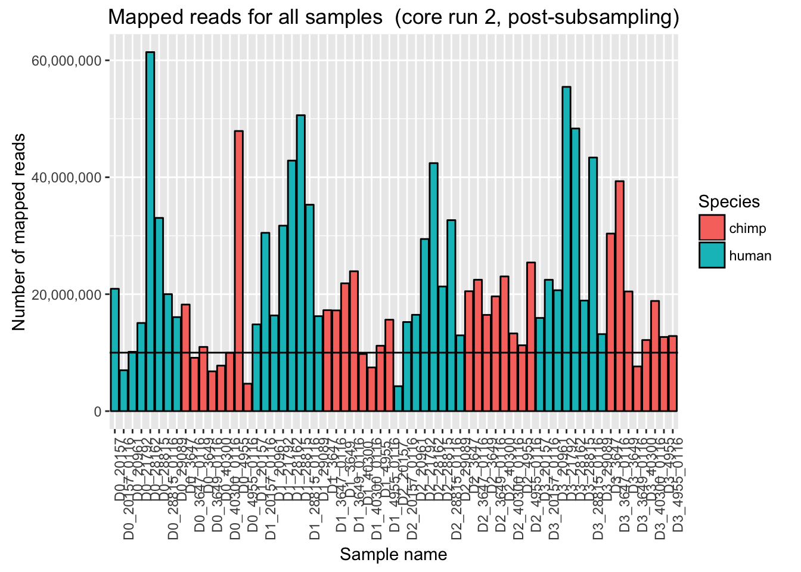
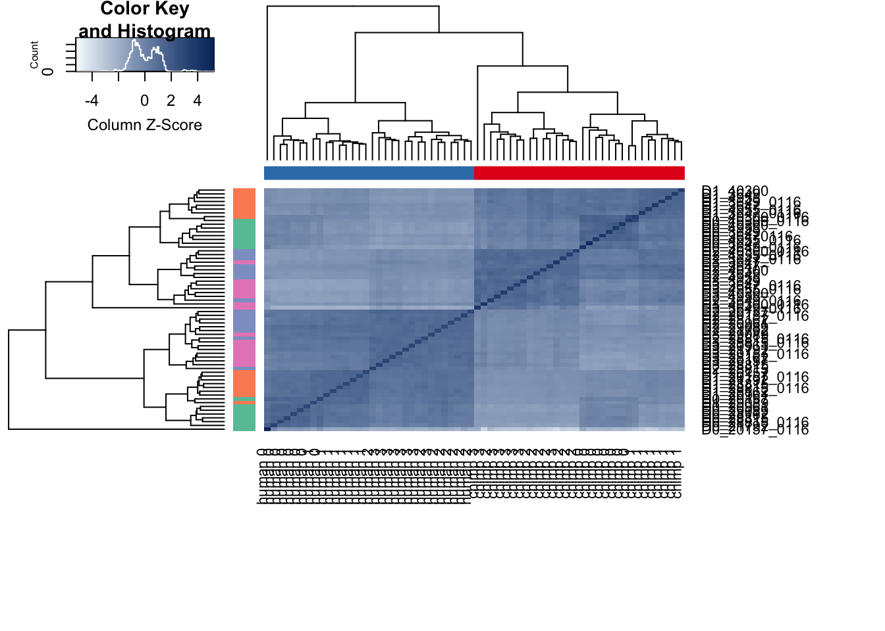
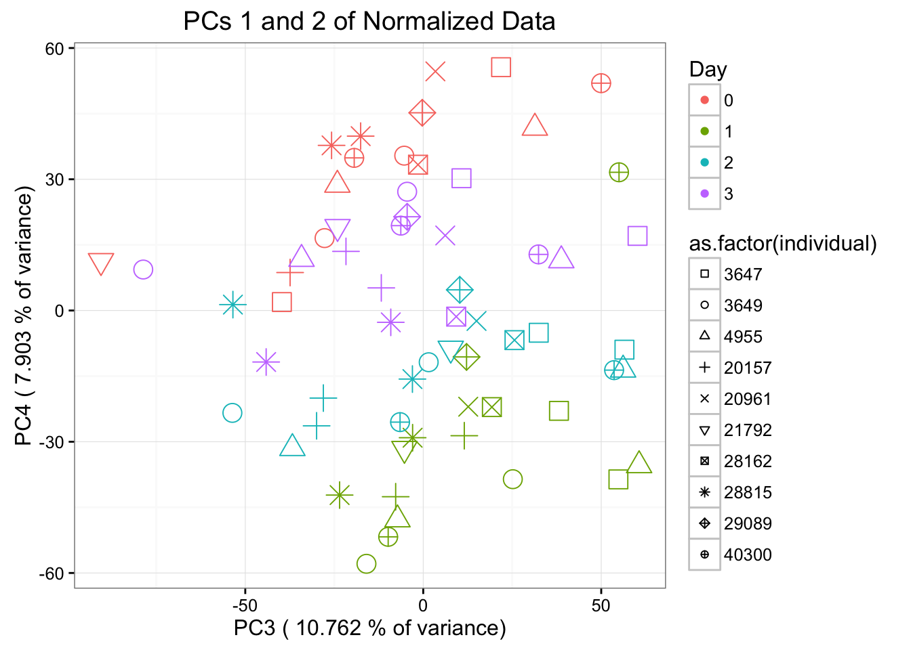

Endoderm_TC_core_runs
Lauren Blake
October 27, 2016
- Introduction
- PLOTS OF UNMAPPED AND MAPPED READS
- VISUALIZATION OF THE RAW DATA
- INITIALIZE NORMALIZATION
- About GC Content Normalization
- Correction for library size
- Visualizing the filtered data
- PCA with 64 samples (supplement)
- Normalization after removal of Sample D0201570116
- Is differentiation batch or individual a stronger driver of variation of gene expression in our samples?
Introduction
The goal of this script is to process the data from the 2 core runs of our endoderm time course project. The data was sequenced on an Illumina 4000 at the University of Chicago Genomics Core Facility. There are 2 species (humans and chimps) with 6 human iPSC lines with 2 replicates and 4 chimp iPSC lines with 4 replicates. RNA was extracted from the iPSCs for each day of the differentation into endoderm for a total of 4 days.
PLOTS OF UNMAPPED AND MAPPED READS
# Load necessary libraries
library(ggplot2)## Warning: package 'ggplot2' was built under R version 3.2.4## Warning: package 'ggplot2' was built under R version 3.2.3
library(scales)## Warning: package 'scales' was built under R version 3.2.3source("~/Desktop/Endoderm_TC/ashlar-trial/analysis/chunk-options.R")## Warning: package 'knitr' was built under R version 3.2.5# Get data for unmapped and mapped reads
Endoderm_mapping_2_core_runs <- read.csv("~/Desktop/Endoderm_TC/Endoderm_mapping_2_core_runs.csv")
# Plot mapped reads per sample with a line at 10 million reads
ggplot(Endoderm_mapping_2_core_runs, aes(x = factor(Sample), y = Total_mapped, fill = Species)) + ylab("Number of mapped reads") + xlab("Sample name") + geom_bar(stat = "identity", colour = "black") + theme(axis.text.x = element_text(angle = 90, hjust = 1)) + xlab("Sample name") + ggtitle("Mapped reads for all samples (2 core runs)") + geom_hline(yintercept = 10000000) + scale_y_continuous(labels = comma)
# Plot mapped reads per sample AFTER subsampling D0_3649_0116
ggplot(Endoderm_mapping_2_core_runs, aes(x = factor(Sample), y = Total_mapped_post_subsample, fill = Species)) + ylab("Number of mapped reads") + xlab("Sample name") + geom_bar(stat = "identity", colour = "black") + theme(axis.text.x = element_text(angle = 90, hjust = 1)) + xlab("Sample name") + ggtitle("Mapped reads for all samples (2 core runs, post-subsampling)") + geom_hline(yintercept = 10000000) + scale_y_continuous(labels = comma)
# Plot mapped reads per sample for core run 1
ggplot(Endoderm_mapping_2_core_runs, aes(x = factor(Sample), y = Reads_mapped_run1, fill = Species)) + ylab("Number of mapped reads") + xlab("Sample name") + geom_bar(stat = "identity", colour = "black") + theme(axis.text.x = element_text(angle = 90, hjust = 1)) + xlab("Sample name") + ggtitle("Mapped reads for all samples (core run 1)") + geom_hline(yintercept = 10000000) + scale_y_continuous(labels = comma)
# Plot mapped reads per sample for core run 1 AFTER subsampling D0_3649_0116
ggplot(Endoderm_mapping_2_core_runs, aes(x = factor(Sample), y = Reads_mapped_post_subsample_run1, fill = Species)) + ylab("Number of mapped reads") + xlab("Sample name") + geom_bar(stat = "identity", colour = "black") + theme(axis.text.x = element_text(angle = 90, hjust = 1)) + xlab("Sample name") + ggtitle("Mapped reads for all samples (core run 1, post-subsampling)") + geom_hline(yintercept = 10000000) + scale_y_continuous(labels = comma)# Plot mapped reads per sample for core run 2
ggplot(Endoderm_mapping_2_core_runs, aes(x = factor(Sample), y = Reads_mapped_run2, fill = Species)) + ylab("Number of mapped reads") + xlab("Sample name") + geom_bar(stat = "identity", colour = "black") + theme(axis.text.x = element_text(angle = 90, hjust = 1)) + xlab("Sample name") + ggtitle("Mapped reads for all samples (core run 2)") + geom_hline(yintercept = 10000000) + scale_y_continuous(labels = comma)# Plot mapped reads per sample for core run 2
ggplot(Endoderm_mapping_2_core_runs, aes(x = factor(Sample), y = Reads_mapped_post_subsample_run2, fill = Species)) + ylab("Number of mapped reads") + xlab("Sample name") + geom_bar(stat = "identity", colour = "black") + theme(axis.text.x = element_text(angle = 90, hjust = 1)) + xlab("Sample name") + ggtitle("Mapped reads for all samples (core run 2, post-subsampling)") + geom_hline(yintercept = 10000000) + scale_y_continuous(labels = comma)
# Plot for unmapped reads/sample for both core runs
ggplot(Endoderm_mapping_2_core_runs, aes(x = factor(Sample), y = Total_unmapped, fill = Species)) + ylab("Number of unmapped reads") + xlab("Sample name") + geom_bar(stat = "identity", colour = "black") + theme(axis.text.x = element_text(angle = 90, hjust = 1)) + xlab("Sample name") + ggtitle("Unmapped reads for all samples (2 core runs)") + geom_hline(yintercept = 10000000) + scale_y_continuous(labels = comma)
# Plot for unmapped reads/sample
ggplot(Endoderm_mapping_2_core_runs, aes(x = factor(Sample), y = Reads_unmapped_run1, fill = Species)) + ylab("Number of unmapped reads") + xlab("Sample name") + geom_bar(stat = "identity", colour = "black") + theme(axis.text.x = element_text(angle = 90, hjust = 1)) + xlab("Sample name") + ggtitle("Unmapped reads for all samples (core run 1)") + geom_hline(yintercept = 10000000) + scale_y_continuous(labels = comma)
# Plot for unmapped reads/lane in core run 1
ggplot(Endoderm_mapping_2_core_runs, aes(x = factor(Lane_run1), y = Reads_unmapped_run1, fill = Species)) + ylab("Number of unmapped reads") + xlab("Lane number") + geom_bar(stat = "identity", colour = "black") + ggtitle("Unmapped reads for all samples (core run 1)") + geom_hline(yintercept = 10000000) + scale_y_continuous(labels = comma)
# Plot for unmapped reads/sample
ggplot(Endoderm_mapping_2_core_runs, aes(x = factor(Sample), y = Reads_unmapped_run2, fill = Species)) + ylab("Number of unmapped reads") + xlab("Sample name") + geom_bar(stat = "identity", colour = "black") + theme(axis.text.x = element_text(angle = 90, hjust = 1)) + xlab("Sample name") + ggtitle("Unmapped reads for all samples (core run 2)") + geom_hline(yintercept = 10000000) + scale_y_continuous(labels = comma)
# Plot for unmapped reads/lane in core run 1
ggplot(Endoderm_mapping_2_core_runs, aes(x = factor(Lane_run2), y = Reads_unmapped_run2, fill = Species)) + ylab("Number of unmapped reads") + xlab("Lane number") + geom_bar(stat = "identity", colour = "black") + ggtitle("Unmapped reads for all samples (core run 2)") + geom_hline(yintercept = 10000000) + scale_y_continuous(labels = comma)
Originally, we had considered subsampling to the median.
# Originally, we had considered subsampling to the median. Find the median of the mapped reads (not including sample D0_3647_0116)
median_test <- as.data.frame(Endoderm_mapping_2_core_runs$Total_mapped)
median_run <- as.data.frame(median_test[-10,])
median(as.numeric(t(median_run)))[1] 35953173#We will subsample Sample D036470116 to the median number of reads, 35953173 reads.
#Actual number of reads in SampleD036470116 post subsampling: 35644778 reads.Given the distribution of the mapped reads, we will subsample to the second highest value.
# Plot mapped reads per sample with a line at 10 million reads
ggplot(Endoderm_mapping_2_core_runs, aes(x = factor(Sample), y = Total_mapped, fill = Species)) + ylab("Number of mapped reads") + xlab("Sample name") + geom_bar(stat = "identity", colour = "black") + theme(axis.text.x = element_text(angle = 90, hjust = 1)) + xlab("Sample name") + ggtitle("Mapped reads for all samples (2 core runs)") + geom_hline(yintercept = 10000000) + scale_y_continuous(labels = comma)
# Plot mapped reads per sample AFTER subsampling D0_3649_0116
ggplot(Endoderm_mapping_2_core_runs, aes(x = factor(Sample), y = Total_mapped_post_subsample, fill = Species)) + ylab("Number of mapped reads") + xlab("Sample name") + geom_bar(stat = "identity", colour = "black") + theme(axis.text.x = element_text(angle = 90, hjust = 1)) + xlab("Sample name") + ggtitle("Mapped reads for all samples (2 core runs, post-subsampling)") + geom_hline(yintercept = 10000000) + scale_y_continuous(labels = comma)
# Plot mapped reads per sample for core run 1
ggplot(Endoderm_mapping_2_core_runs, aes(x = factor(Sample), y = Reads_mapped_run1, fill = Species)) + ylab("Number of mapped reads") + xlab("Sample name") + geom_bar(stat = "identity", colour = "black") + theme(axis.text.x = element_text(angle = 90, hjust = 1)) + xlab("Sample name") + ggtitle("Mapped reads for all samples (core run 1)") + geom_hline(yintercept = 10000000) + scale_y_continuous(labels = comma)
# Plot mapped reads per sample for core run 1 AFTER subsampling D0_3649_0116
ggplot(Endoderm_mapping_2_core_runs, aes(x = factor(Sample), y = Reads_mapped_post_subsample_run1, fill = Species)) + ylab("Number of mapped reads") + xlab("Sample name") + geom_bar(stat = "identity", colour = "black") + theme(axis.text.x = element_text(angle = 90, hjust = 1)) + xlab("Sample name") + ggtitle("Mapped reads for all samples (core run 1, post-subsampling)") + geom_hline(yintercept = 10000000) + scale_y_continuous(labels = comma)
# Plot mapped reads per sample for core run 2
ggplot(Endoderm_mapping_2_core_runs, aes(x = factor(Sample), y = Reads_mapped_run2, fill = Species)) + ylab("Number of mapped reads") + xlab("Sample name") + geom_bar(stat = "identity", colour = "black") + theme(axis.text.x = element_text(angle = 90, hjust = 1)) + xlab("Sample name") + ggtitle("Mapped reads for all samples (core run 2)") + geom_hline(yintercept = 10000000) + scale_y_continuous(labels = comma)
# Plot mapped reads per sample for core run 2
ggplot(Endoderm_mapping_2_core_runs, aes(x = factor(Sample), y = Reads_mapped_post_subsample_run2, fill = Species)) + ylab("Number of mapped reads") + xlab("Sample name") + geom_bar(stat = "identity", colour = "black") + theme(axis.text.x = element_text(angle = 90, hjust = 1)) + xlab("Sample name") + ggtitle("Mapped reads for all samples (core run 2, post-subsampling)") + geom_hline(yintercept = 10000000) + scale_y_continuous(labels = comma)
VISUALIZATION OF THE RAW DATA
# Load libraries
library("gplots")Warning: package 'gplots' was built under R version 3.2.4
Attaching package: 'gplots'The following object is masked from 'package:stats':
lowesslibrary("RColorBrewer")
library("scales")
library("edgeR")Warning: package 'edgeR' was built under R version 3.2.4Loading required package: limmaWarning: package 'limma' was built under R version 3.2.4# Load colors
colors <- colorRampPalette(c(brewer.pal(9, "Blues")[1],brewer.pal(9, "Blues")[9]))(100)
pal <- c(brewer.pal(9, "Set1"), brewer.pal(8, "Set2"), brewer.pal(12, "Set3"))
# Set expression cutoff
expr_cutoff <- 1.5
# Load count data
gene_counts_combined_raw_data <- read.delim("~/Desktop/Endoderm_TC/gene_counts_combined.txt")
#gene_counts_combined_raw_data <- read.delim("~/Dropbox/Endoderm TC/gene_counts_combined_raw_data.txt", header=FALSE, stringsAsFactors=FALSE)
counts_genes <- gene_counts_combined_raw_data[1:30030,2:65]
rownames(counts_genes) <- gene_counts_combined_raw_data[1:30030,1]
#counts_genes <- gene_counts
# Load sample info
Endoderm_mapping_core_1 <- read.csv("~/Desktop/Endoderm_TC/Endoderm_mapping_core_1.csv")
# Make labels with species and day
species <- Endoderm_mapping_core_1$Species
Species <- Endoderm_mapping_core_1$Species
day <- Endoderm_mapping_core_1$Day
individual <- Endoderm_mapping_core_1$Individual
Sample_ID <- Endoderm_mapping_core_1$Sample_ID
labels <- paste(species, day, sep=" ")# Hierarchical clustering on raw data
cors <- cor(counts_genes, method="spearman", use="pairwise.complete.obs")
heatmap.2( cors, scale="column", col = colors, margins = c(12, 12), trace='none', denscol="white", labCol=labels, ColSideColors=pal[as.integer(as.factor(Endoderm_mapping_core_1$Species))], RowSideColors=pal[as.integer(as.factor(Endoderm_mapping_core_1$Day))+9], cexCol = 0.2 + 1/log10(15), cexRow = 0.2 + 1/log10(15))
#PCA function (original code from Julien Roux)
#Load in the plot_scores function
plot_scores <- function(pca, scores, n, m, cols, points=F, pchs =20, legend=F){
xmin <- min(scores[,n]) - (max(scores[,n]) - min(scores[,n]))*0.05
if (legend == T){ ## let some room (35%) for a legend
xmax <- max(scores[,n]) + (max(scores[,n]) - min(scores[,n]))*0.50
}
else {
xmax <- max(scores[,n]) + (max(scores[,n]) - min(scores[,n]))*0.05
}
ymin <- min(scores[,m]) - (max(scores[,m]) - min(scores[,m]))*0.05
ymax <- max(scores[,m]) + (max(scores[,m]) - min(scores[,m]))*0.05
plot(scores[,n], scores[,m], xlab=paste("PC", n, ": ", round(summary(pca)$importance[2,n],3)*100, "% variance explained", sep=""), ylab=paste("PC", m, ": ", round(summary(pca)$importance[2,m],3)*100, "% variance explained", sep=""), xlim=c(xmin, xmax), ylim=c(ymin, ymax), type="n")
if (points == F){
text(scores[,n],scores[,m], rownames(scores), col=cols, cex=1)
}
else {
points(scores[,n],scores[,m], col=cols, pch=pchs, cex=1.3)
}
}
# Run the PCA
# Check that there's no "NAs" in the data
select <- counts_genes
summary(apply(select, 1, var) == 0) Mode FALSE TRUE NA's
logical 25466 4564 0 row_sub = apply(counts_genes, 1, function(row) all(row !=0 ))
counts_genes_no0 <- counts_genes[row_sub,]
# Perform PCA
pca_genes <- prcomp(t(counts_genes_no0), scale = T)
scores <- pca_genes$x
#Make PCA plots with the factors colored by day
### PCs 1 and 2 Raw Data
for (n in 1:1){
col.v <- pal[as.integer(species)]
plot_scores(pca_genes, scores, n, n+1, col.v)
}
for (n in 1:1){
col.v <- pal[as.integer(species)]
plot_scores(pca_genes, scores, n, n+1, col.v)
}INITIALIZE NORMALIZATION
# Let's see what happens when we take the log2 of the raw counts
log_counts_genes <- as.data.frame(log2(counts_genes))
head(log_counts_genes) D0_20157 D0_20157_0116 D0_20961 D0_21792 D0_28162
ENSG00000000003 11.521110 10.709945 12.048487 12.100662 12.897278
ENSG00000000005 5.321928 2.807355 5.169925 4.807355 7.228819
ENSG00000000419 10.456354 10.198445 10.961450 11.321364 12.038919
ENSG00000000457 7.357552 5.643856 8.588715 8.076816 9.111136
ENSG00000000460 9.440869 7.189825 10.786270 10.148477 10.680360
ENSG00000000938 1.584963 0.000000 4.584963 3.321928 4.954196
D0_28815 D0_28815_0116 D0_29089 D0_3647 D0_36470116
ENSG00000000003 11.989040 12.155451 11.224002 12.154818 13.254881
ENSG00000000005 5.857981 7.087463 2.584963 3.169925 4.169925
ENSG00000000419 10.718533 11.145932 10.459432 9.905387 11.949827
ENSG00000000457 8.076816 9.002815 7.988685 8.668885 10.129283
ENSG00000000460 9.829723 10.291171 9.479780 9.882643 10.920353
ENSG00000000938 2.807355 3.906891 1.000000 -Inf 1.000000
D0_3649 D0_3649_0116 D0_40300 D0_40300_0116 D0_4955
ENSG00000000003 11.194141 10.038919 11.894818 11.224002 13.39460
ENSG00000000005 2.321928 0.000000 3.807355 2.321928 4.70044
ENSG00000000419 8.980140 8.515700 9.663558 9.596190 11.24555
ENSG00000000457 8.294621 6.918863 8.930737 8.672425 10.37504
ENSG00000000460 8.888743 7.569856 9.554589 9.703904 10.82655
ENSG00000000938 -Inf 0.000000 1.000000 -Inf 1.00000
D0_4955_0116 D1_20157 D1_20157_0116 D1_20961 D1_21792
ENSG00000000003 11.038233 12.735133 11.849014 11.160502 11.843529
ENSG00000000005 2.584963 7.700440 7.169925 6.794416 7.658211
ENSG00000000419 9.177420 11.967226 11.147841 10.714246 11.277287
ENSG00000000457 8.299208 8.778077 7.787903 7.357552 7.748193
ENSG00000000460 9.290019 10.556506 9.923327 9.503826 10.049849
ENSG00000000938 0.000000 1.584963 0.000000 0.000000 0.000000
D1_28162 D1_28815 D1_28815_0116 D1_29089 D1_3647
ENSG00000000003 12.377211 12.658435 12.395534 11.656872 11.034799
ENSG00000000005 6.832890 8.294621 8.422065 6.357552 3.459432
ENSG00000000419 11.536247 11.971184 11.871135 11.176173 9.377211
ENSG00000000457 8.262095 8.894818 9.014020 7.832890 8.290019
ENSG00000000460 10.370687 10.694358 11.091435 10.005625 9.052568
ENSG00000000938 2.807355 1.000000 0.000000 1.000000 -Inf
D1_3647_0116 D1_3649 D1_3649_0116 D1_40300
ENSG00000000003 10.550747 11.401413 11.483312 12.233919
ENSG00000000005 1.000000 2.000000 0.000000 2.000000
ENSG00000000419 9.411511 9.649256 10.040290 10.350939
ENSG00000000457 7.977280 8.717676 8.554589 9.162391
ENSG00000000460 8.693487 9.335390 9.142107 9.977280
ENSG00000000938 0.000000 0.000000 -Inf -Inf
D1_40300_0116 D1_4955 D1_4955_0116 D2_20157
ENSG00000000003 11.051209 11.438272 12.670878 11.876133
ENSG00000000005 2.321928 3.584963 2.321928 5.209453
ENSG00000000419 9.465566 9.870365 11.398209 11.547377
ENSG00000000457 8.479780 8.614710 9.840778 8.573647
ENSG00000000460 9.537218 9.068778 10.904635 9.583083
ENSG00000000938 -Inf -Inf -Inf -Inf
D2_20157_0116 D2_20961 D2_21792 D2_28162 D2_28815
ENSG00000000003 10.650154 10.291171 11.325868 12.052908 10.650154
ENSG00000000005 3.321928 4.459432 4.857981 2.807355 6.375039
ENSG00000000419 10.421013 10.130571 11.186114 11.620220 11.627990
ENSG00000000457 7.159871 7.321928 8.049849 8.885696 9.802516
ENSG00000000460 8.507795 8.599913 9.719389 10.086136 10.209453
ENSG00000000938 0.000000 -Inf 0.000000 2.584963 2.000000
D2_28815_0116 D2_29089 D2_3647 D2_3647_0116 D2_3649
ENSG00000000003 11.740202 11.353698 11.174926 10.471675 11.527966
ENSG00000000005 6.845490 4.954196 0.000000 -Inf -Inf
ENSG00000000419 11.273213 11.032046 9.596190 9.184875 9.784635
ENSG00000000457 9.296916 8.285402 8.622052 8.388017 8.930737
ENSG00000000460 10.491853 9.831307 9.134426 8.487840 9.071462
ENSG00000000938 1.584963 1.000000 -Inf -Inf 0.000000
D2_3649_0116 D2_40300 D2_40300_0116 D2_4955
ENSG00000000003 10.803324 11.479275 10.381543 10.807355
ENSG00000000005 0.000000 0.000000 0.000000 2.807355
ENSG00000000419 9.211888 9.909893 9.025140 9.328675
ENSG00000000457 8.400879 9.111136 8.388017 8.266787
ENSG00000000460 8.060696 9.139551 8.479780 8.164907
ENSG00000000938 0.000000 -Inf -Inf -Inf
D2_4955_0116 D3_20157 D3_20157_0116 D3_20961 D3_21792
ENSG00000000003 11.355351 11.591522 10.720244 10.552669 11.376668
ENSG00000000005 -Inf 3.700440 2.321928 4.169925 4.700440
ENSG00000000419 10.149747 11.239599 9.906891 10.210671 11.446566
ENSG00000000457 9.283088 8.643856 7.442943 7.636625 8.945444
ENSG00000000460 9.601771 9.714246 8.129283 8.744834 10.103288
ENSG00000000938 -Inf -Inf -Inf -Inf 0.000000
D3_28162 D3_28815 D3_28815_0116 D3_29089 D3_3647
ENSG00000000003 11.734710 11.029287 12.028597 11.053926 10.936638
ENSG00000000005 2.321928 4.000000 8.794416 4.169925 3.000000
ENSG00000000419 11.327553 10.564149 11.224002 10.551708 9.473706
ENSG00000000457 8.679480 8.164907 9.142107 7.845490 8.918863
ENSG00000000460 9.204571 8.361944 10.221587 9.011227 8.581201
ENSG00000000938 1.000000 -Inf 0.000000 0.000000 -Inf
D3_3647_0116 D3_3649 D3_3649_0116 D3_40300
ENSG00000000003 11.250891 11.122181 9.661778 10.505812
ENSG00000000005 1.000000 0.000000 -Inf 2.000000
ENSG00000000419 9.719389 9.436712 7.672425 9.016808
ENSG00000000457 9.047124 9.149747 7.000000 8.848623
ENSG00000000460 8.103288 7.894818 5.392317 7.988685
ENSG00000000938 0.000000 0.000000 2.000000 -Inf
D3_40300_0116 D3_4955 D3_4955_0116
ENSG00000000003 11.142107 10.512740 10.627534
ENSG00000000005 -Inf 1.000000 -Inf
ENSG00000000419 9.726218 9.259743 9.162391
ENSG00000000457 8.965784 8.903882 8.647458
ENSG00000000460 8.787903 7.523562 8.022368
ENSG00000000938 -Inf -Inf -Inf# Plot density (a) by species and (b) by day
plotDensities(log_counts_genes, col=pal[as.numeric(Endoderm_mapping_core_1$Species)], legend="topright")
plotDensities(log_counts_genes, col=pal[as.numeric(Endoderm_mapping_core_1$Day)], legend="topright")
# Log2(CPM)
cpm <- cpm(counts_genes, log=TRUE)
# Make plot
hist(cpm, main = "log2(CPM) values in unfiltered data (n = 64 samples)", breaks = 100, ylim = c(0, 50000), xlab = "log2(CPM) values")
abline(v = expr_cutoff, col = "red", lwd = 3)
# Plot density (a) by species and (b) by day
plotDensities(cpm, col=pal[as.numeric(Endoderm_mapping_core_1$Species)], legend="topright")
plotDensities(cpm, col=pal[as.numeric(Endoderm_mapping_core_1$Day)], legend="topright")
# Plot library size
#boxplot_library_size <- ggplot(dge_original$samples, aes(x = as.factor(Endoderm_mapping_core_1$Day), y = dge_original$samples$lib.size, fill = Endoderm_mapping_core_1$Species)) + geom_boxplot()
#boxplot_library_size + labs(title = "Library size by day") + labs(y = "Library size") + labs(x = "Day") + guides(fill=guide_legend(title="Species"))Filtering lowly expressed genes
We are beginning with 30030 genes and 64 samples (8 samples/species x 4 timepoints/species x 2 species) Based on what we have learned from Roux and Blake (http://lauren-blake.github.io/Reg_Evo_Primates/analysis/Correlation_bet_tech_factors_in_best_set_and_expression_stringent_filtering.html), we will use a cutoff of log2(CPM) > 1.5 in at least 16 of the human samples and 16 of the chimp samples.
expr_cutoff <- 1.5
# Make plot
hist(cpm, main = "log2(CPM) values in unfiltered data (n = 64 samples)", breaks = 100, ylim = c(0, 50000), xlab = "log2(CPM) values")
abline(v = expr_cutoff, col = "red", lwd = 3)
# Filter data
humans <- c(1:8, 17:24, 33:40, 49:56)
chimps <- c(9:16, 25:32, 41:48, 57:64 )
cpm_filtered <- (rowSums(cpm[,humans] > 1.5) > 16 & rowSums(cpm[,chimps] > 1.5) > 16)
genes_in_cutoff <- cpm[cpm_filtered==TRUE,]
dim(genes_in_cutoff)[1] 10270 64# Make a histogram of the filtered data
hist(as.numeric(unlist(genes_in_cutoff)), main = "log2(CPM) values in filtered data (n = 64 samples, 10,270 genes)", breaks = 100, ylim = c(0, 50000), xlab = "log2(CPM) values")
About GC Content Normalization
Roux and Blake’s comparative analysis (http://lauren-blake.github.io/Reg_Evo_Primates/analysis/GC_content_normalization_CHT.html) showed that GC content normalization does not substantially impact gene counts. Therefore, we will not perform it in this analysis.
Correction for library size
# Find the original counts of all of the genes that fit the criteria
counts_genes_in_cutoff <- counts_genes[cpm_filtered==TRUE,]
dim(counts_genes_in_cutoff)[1] 10270 64# Take the TMM of the counts only for the genes that remain after filtering
dge_in_cutoff <- DGEList(counts=as.matrix(counts_genes_in_cutoff), genes=rownames(counts_genes_in_cutoff), group = as.character(t(labels)))
dge_in_cutoff <- calcNormFactors(dge_in_cutoff)
cpm_in_cutoff <- cpm(dge_in_cutoff, normalized.lib.sizes=TRUE, log=TRUE)
head(summary(cpm_in_cutoff)) D0_20157 D0_20157_0116 D0_20961
"Min. :-0.9894 " "Min. :-6.277 " "Min. :-3.625 "
"1st Qu.: 3.9680 " "1st Qu.: 3.066 " "1st Qu.: 4.048 "
"Median : 5.3500 " "Median : 5.165 " "Median : 5.354 "
"Mean : 5.2974 " "Mean : 4.839 " "Mean : 5.308 "
"3rd Qu.: 6.5794 " "3rd Qu.: 6.874 " "3rd Qu.: 6.575 "
"Max. :12.7214 " "Max. :14.024 " "Max. :12.545 "
D0_21792 D0_28162 D0_28815
"Min. :-3.906 " "Min. :-6.277 " "Min. :-6.277 "
"1st Qu.: 3.840 " "1st Qu.: 4.030 " "1st Qu.: 3.981 "
"Median : 5.292 " "Median : 5.396 " "Median : 5.345 "
"Mean : 5.206 " "Mean : 5.311 " "Mean : 5.277 "
"3rd Qu.: 6.600 " "3rd Qu.: 6.591 " "3rd Qu.: 6.574 "
"Max. :12.780 " "Max. :12.369 " "Max. :12.697 "
D0_28815_0116 D0_29089 D0_3647
"Min. :-6.277 " "Min. :-6.277 " "Min. :-3.847 "
"1st Qu.: 3.983 " "1st Qu.: 4.058 " "1st Qu.: 3.919 "
"Median : 5.350 " "Median : 5.357 " "Median : 5.308 "
"Mean : 5.286 " "Mean : 5.313 " "Mean : 5.251 "
"3rd Qu.: 6.564 " "3rd Qu.: 6.584 " "3rd Qu.: 6.596 "
"Max. :12.859 " "Max. :12.393 " "Max. :12.686 "
D0_36470116 D0_3649 D0_3649_0116
"Min. :-6.277 " "Min. :-6.277 " "Min. :-6.277 "
"1st Qu.: 3.708 " "1st Qu.: 3.895 " "1st Qu.: 3.757 "
"Median : 5.246 " "Median : 5.299 " "Median : 5.267 "
"Mean : 5.164 " "Mean : 5.222 " "Mean : 5.168 "
"3rd Qu.: 6.608 " "3rd Qu.: 6.578 " "3rd Qu.: 6.610 "
"Max. :12.476 " "Max. :12.764 " "Max. :12.925 "
D0_40300 D0_40300_0116 D0_4955
"Min. :-6.277 " "Min. :-6.277 " "Min. :-4.746 "
"1st Qu.: 3.952 " "1st Qu.: 3.897 " "1st Qu.: 3.850 "
"Median : 5.327 " "Median : 5.325 " "Median : 5.286 "
"Mean : 5.246 " "Mean : 5.255 " "Mean : 5.205 "
"3rd Qu.: 6.590 " "3rd Qu.: 6.603 " "3rd Qu.: 6.582 "
"Max. :12.897 " "Max. :12.788 " "Max. :12.819 "
D0_4955_0116 D1_20157 D1_20157_0116
"Min. :-6.277 " "Min. :-2.359 " "Min. :-2.563 "
"1st Qu.: 3.870 " "1st Qu.: 3.950 " "1st Qu.: 3.958 "
"Median : 5.314 " "Median : 5.350 " "Median : 5.348 "
"Mean : 5.234 " "Mean : 5.303 " "Mean : 5.301 "
"3rd Qu.: 6.604 " "3rd Qu.: 6.608 " "3rd Qu.: 6.593 "
"Max. :12.687 " "Max. :12.742 " "Max. :12.874 "
D1_20961 D1_21792 D1_28162
"Min. :-1.452 " "Min. :-6.277 " "Min. :-3.585 "
"1st Qu.: 3.995 " "1st Qu.: 3.940 " "1st Qu.: 4.023 "
"Median : 5.357 " "Median : 5.351 " "Median : 5.380 "
"Mean : 5.312 " "Mean : 5.293 " "Mean : 5.315 "
"3rd Qu.: 6.587 " "3rd Qu.: 6.603 " "3rd Qu.: 6.590 "
"Max. :12.358 " "Max. :12.642 " "Max. :12.838 "
D1_28815 D1_28815_0116 D1_29089
"Min. :-6.277 " "Min. :-4.527 " "Min. :-3.943 "
"1st Qu.: 3.913 " "1st Qu.: 3.965 " "1st Qu.: 4.016 "
"Median : 5.344 " "Median : 5.353 " "Median : 5.365 "
"Mean : 5.285 " "Mean : 5.307 " "Mean : 5.317 "
"3rd Qu.: 6.601 " "3rd Qu.: 6.596 " "3rd Qu.: 6.600 "
"Max. :12.705 " "Max. :12.724 " "Max. :12.346 "
D1_3647 D1_3647_0116 D1_3649
"Min. :-2.492 " "Min. :-2.163 " "Min. :-6.277 "
"1st Qu.: 3.932 " "1st Qu.: 3.912 " "1st Qu.: 3.841 "
"Median : 5.324 " "Median : 5.329 " "Median : 5.306 "
"Mean : 5.285 " "Mean : 5.293 " "Mean : 5.240 "
"3rd Qu.: 6.617 " "3rd Qu.: 6.643 " "3rd Qu.: 6.618 "
"Max. :12.896 " "Max. :12.942 " "Max. :12.758 "
D1_3649_0116 D1_40300 D1_40300_0116
"Min. :-3.535 " "Min. :-4.028 " "Min. :-1.474 "
"1st Qu.: 3.749 " "1st Qu.: 3.813 " "1st Qu.: 3.947 "
"Median : 5.260 " "Median : 5.290 " "Median : 5.356 "
"Mean : 5.195 " "Mean : 5.206 " "Mean : 5.306 "
"3rd Qu.: 6.613 " "3rd Qu.: 6.580 " "3rd Qu.: 6.615 "
"Max. :12.607 " "Max. :13.001 " "Max. :12.780 "
D1_4955 D1_4955_0116 D2_20157
"Min. :-6.277 " "Min. :-6.277 " "Min. :-1.643 "
"1st Qu.: 3.759 " "1st Qu.: 3.813 " "1st Qu.: 4.034 "
"Median : 5.281 " "Median : 5.311 " "Median : 5.383 "
"Mean : 5.189 " "Mean : 5.243 " "Mean : 5.348 "
"3rd Qu.: 6.612 " "3rd Qu.: 6.643 " "3rd Qu.: 6.572 "
"Max. :12.896 " "Max. :12.712 " "Max. :13.725 "
D2_20157_0116 D2_20961 D2_21792
"Min. :-1.862 " "Min. :-0.2512 " "Min. :-1.138 "
"1st Qu.: 3.977 " "1st Qu.: 4.0231 " "1st Qu.: 4.019 "
"Median : 5.370 " "Median : 5.3629 " "Median : 5.366 "
"Mean : 5.316 " "Mean : 5.3503 " "Mean : 5.349 "
"3rd Qu.: 6.594 " "3rd Qu.: 6.5847 " "3rd Qu.: 6.580 "
"Max. :13.646 " "Max. :13.2244 " "Max. :12.932 "
D2_28162 D2_28815 D2_28815_0116
"Min. :-2.997 " "Min. :-2.890 " "Min. :-3.607 "
"1st Qu.: 4.030 " "1st Qu.: 4.096 " "1st Qu.: 4.021 "
"Median : 5.386 " "Median : 5.415 " "Median : 5.383 "
"Mean : 5.334 " "Mean : 5.381 " "Mean : 5.339 "
"3rd Qu.: 6.583 " "3rd Qu.: 6.669 " "3rd Qu.: 6.569 "
"Max. :13.897 " "Max. :12.443 " "Max. :13.251 "
D2_29089 D2_3647 D2_3647_0116
"Min. :-1.372 " "Min. :-0.9076 " "Min. :-1.522 "
"1st Qu.: 4.092 " "1st Qu.: 3.9531 " "1st Qu.: 4.039 "
"Median : 5.370 " "Median : 5.3625 " "Median : 5.390 "
"Mean : 5.357 " "Mean : 5.3251 " "Mean : 5.342 "
"3rd Qu.: 6.560 " "3rd Qu.: 6.6357 " "3rd Qu.: 6.619 "
"Max. :12.522 " "Max. :13.1232 " "Max. :13.607 "
D2_3649 D2_3649_0116 D2_40300
"Min. :-2.161 " "Min. :-6.277 " "Min. :-0.7417 "
"1st Qu.: 4.003 " "1st Qu.: 3.881 " "1st Qu.: 3.9560 "
"Median : 5.366 " "Median : 5.340 " "Median : 5.3484 "
"Mean : 5.317 " "Mean : 5.234 " "Mean : 5.3038 "
"3rd Qu.: 6.601 " "3rd Qu.: 6.610 " "3rd Qu.: 6.6030 "
"Max. :13.594 " "Max. :12.862 " "Max. :13.2013 "
D2_40300_0116 D2_4955 D2_4955_0116
"Min. :-1.791 " "Min. :-6.277 " "Min. :-6.277 "
"1st Qu.: 3.960 " "1st Qu.: 3.940 " "1st Qu.: 3.931 "
"Median : 5.359 " "Median : 5.329 " "Median : 5.364 "
"Mean : 5.314 " "Mean : 5.271 " "Mean : 5.290 "
"3rd Qu.: 6.648 " "3rd Qu.: 6.577 " "3rd Qu.: 6.655 "
"Max. :13.587 " "Max. :13.100 " "Max. :13.514 "
D3_20157 D3_20157_0116 D3_20961
"Min. :-2.060 " "Min. :-2.545 " "Min. :-0.5907 "
"1st Qu.: 4.114 " "1st Qu.: 4.091 " "1st Qu.: 4.1101 "
"Median : 5.409 " "Median : 5.414 " "Median : 5.3860 "
"Mean : 5.379 " "Mean : 5.361 " "Mean : 5.3744 "
"3rd Qu.: 6.606 " "3rd Qu.: 6.606 " "3rd Qu.: 6.5787 "
"Max. :13.317 " "Max. :14.284 " "Max. :13.1152 "
D3_21792 D3_28162 D3_28815
"Min. :-0.958 " "Min. :-6.277 " "Min. :-2.907 "
"1st Qu.: 4.106 " "1st Qu.: 4.031 " "1st Qu.: 3.981 "
"Median : 5.395 " "Median : 5.431 " "Median : 5.388 "
"Mean : 5.379 " "Mean : 5.346 " "Mean : 5.316 "
"3rd Qu.: 6.580 " "3rd Qu.: 6.613 " "3rd Qu.: 6.611 "
"Max. :12.253 " "Max. :14.448 " "Max. :13.826 "
D3_28815_0116 D3_29089 D3_3647
"Min. :-3.671 " "Min. :-3.900 " "Min. :-0.9919 "
"1st Qu.: 4.034 " "1st Qu.: 4.173 " "1st Qu.: 4.0378 "
"Median : 5.402 " "Median : 5.405 " "Median : 5.3931 "
"Mean : 5.354 " "Mean : 5.388 " "Mean : 5.3686 "
"3rd Qu.: 6.590 " "3rd Qu.: 6.541 " "3rd Qu.: 6.6459 "
"Max. :13.294 " "Max. :12.500 " "Max. :13.5213 "
D3_3647_0116 D3_3649 D3_3649_0116
"Min. :-6.277 " "Min. :-6.277 " "Min. :-6.277 "
"1st Qu.: 4.021 " "1st Qu.: 4.083 " "1st Qu.: 3.917 "
"Median : 5.409 " "Median : 5.412 " "Median : 5.384 "
"Mean : 5.312 " "Mean : 5.323 " "Mean : 5.222 "
"3rd Qu.: 6.646 " "3rd Qu.: 6.595 " "3rd Qu.: 6.641 "
"Max. :14.144 " "Max. :14.109 " "Max. :13.168 "
D3_40300 D3_40300_0116 D3_4955
"Min. :-6.277 " "Min. :-3.749 " "Min. :-6.277 "
"1st Qu.: 4.070 " "1st Qu.: 4.016 " "1st Qu.: 4.038 "
"Median : 5.410 " "Median : 5.403 " "Median : 5.429 "
"Mean : 5.353 " "Mean : 5.314 " "Mean : 5.336 "
"3rd Qu.: 6.606 " "3rd Qu.: 6.629 " "3rd Qu.: 6.631 "
"Max. :13.482 " "Max. :14.081 " "Max. :13.279 "
D3_4955_0116
"Min. :-6.277 "
"1st Qu.: 3.977 "
"Median : 5.398 "
"Mean : 5.285 "
"3rd Qu.: 6.646 "
"Max. :14.189 "# Make density plots of the filtered data
plotDensities(cpm_in_cutoff, col=pal[as.numeric(species)], legend="topright")
plotDensities(cpm_in_cutoff, col=pal[as.numeric(day)], legend="topright")
#gplots::heatmap.2(x=as.matrix(t(cpm_in_cutoff)),
# , distfun = dist(x, method = "euclidean"),
# hclustfun = function(x) hclust(dist(x), method = "average"), tracecol=NA, col=colors, denscol="white", ColSideColors=pal[as.integer(as.factor(Day))+9])
cors <- cor(cpm_in_cutoff, method="spearman", use="pairwise.complete.obs")
heatmap.2( cors, scale="column", col = colors, margins = c(12, 12), trace='none', denscol="white", labCol=labels, ColSideColors=pal[as.integer(as.factor(Endoderm_mapping_core_1$Species))], RowSideColors=pal[as.integer(as.factor(Endoderm_mapping_core_1$Day))+9], cexCol = 0.2 + 1/log10(15), cexRow = 0.2 + 1/log10(15))
Visualizing the filtered data
# Make PCA plots with the factors colored by day
pca_genes <- prcomp(t(cpm_in_cutoff), scale = T)
scores <- pca_genes$x
### PCs 1 and 2
for (n in 1:1){
col.v <- pal[as.integer(species)]
plot_scores(pca_genes, scores, n, n+1, col.v)
}for (n in 2:2){
col.v <- pal[as.integer(species)]
plot_scores(pca_genes, scores, n, n+1, col.v)
}PCA with 64 samples (supplement)
Without cyclic loess normalization (supplement)
# Make PCA plots with the factors colored by day
pca_genes <- prcomp(t(cpm_in_cutoff), scale = T, retx = TRUE, center = TRUE)
matrixpca <- pca_genes$x
pc1 <- matrixpca[,1]
pc2 <- matrixpca[,2]
pc3 <- matrixpca[,3]
pc4 <- matrixpca[,4]
pc5 <- matrixpca[,5]
pcs <- data.frame(pc1, pc2, pc3, pc4, pc5)
summary <- summary(pca_genes)
#dev.off()
ggplot(data=pcs, aes(x=pc1, y=pc2, color=day, shape=Species, size=2)) + geom_point(aes(colour = as.factor(day))) + scale_colour_manual(name="Day",
values = c("0"=rgb(239/255, 110/255, 99/255, 1), "1"= rgb(0/255, 180/255, 81/255, 1), "2"=rgb(0/255, 177/255, 219/255, 1),
"3"=rgb(199/255, 124/255, 255/255,1))) + xlab(paste("PC1 (",(summary$importance[2,1]*100), "% of variance)")) + ylab(paste("PC2 (",(summary$importance[2,2]*100), "% of variance)")) + scale_size(guide = 'none') + theme_bw() + ggtitle("PCs 1 and 2 from TMM normalized expression (64 samples)")
With cyclic loess normalization (supplement)
# Cyclic loess normalization
# Make the design matrix (so that you can use voom to perform the cyclic loess normalization )
condition <- factor(paste(species,day,sep="."))
design <- model.matrix(~ 0 + condition)
colnames(design) <- gsub("condition", "", dput(colnames(design)))c("conditionchimp.0", "conditionchimp.1", "conditionchimp.2",
"conditionchimp.3", "conditionhuman.0", "conditionhuman.1", "conditionhuman.2",
"conditionhuman.3")# We want a random effect term for individual. As a result, we want to run voom twice. See https://support.bioconductor.org/p/59700/
cpm.voom <- voom(dge_in_cutoff, design, normalize.method="cyclicloess")
# Make PCA plots with the factors colored by day
pca_genes <- prcomp(t(cpm.voom$E), scale = T, retx = TRUE, center = TRUE)
matrixpca <- pca_genes$x
pc1 <- matrixpca[,1]
pc2 <- matrixpca[,2]
pc3 <- matrixpca[,3]
pc4 <- matrixpca[,4]
pc5 <- matrixpca[,5]
pcs <- data.frame(pc1, pc2, pc3, pc4, pc5)
summary <- summary(pca_genes)
#dev.off()
ggplot(data=pcs, aes(x=pc1, y=pc2, color=day, shape=Species, size=2)) + geom_point(aes(colour = as.factor(day))) + scale_colour_manual(name="Day",
values = c("0"=rgb(239/255, 110/255, 99/255, 1), "1"= rgb(0/255, 180/255, 81/255, 1), "2"=rgb(0/255, 177/255, 219/255, 1),
"3"=rgb(199/255, 124/255, 255/255,1))) + xlab(paste("PC1 (",(summary$importance[2,1]*100),"% of variance)")) + ylab(paste("PC2 (",(summary$importance[2,2]*100),"% of variance)")) + scale_size(guide = 'none') + theme_bw() + ggtitle("PCs 1 and 2 from TMM+cyclic loess normalized expression (64 samples)")
From the PCA plot, we see that Sample D0201570116 is a clear outlier and doesn’t cluster with anything, including its technical replicate. We will remove this sample and then go through the same process as above to visualize the data.
Normalization after removal of Sample D0201570116
# Get data and sample info
counts_genes63 <- counts_genes[,-2]
dim(counts_genes63)[1] 30030 63After_removal_sample_info <- read.csv("~/Desktop/Endoderm_TC/After_removal_sample_info.csv")
Species <- After_removal_sample_info$Species
species <- After_removal_sample_info$Species
day <- After_removal_sample_info$Day
individual <- After_removal_sample_info$Individual
Sample_ID <- After_removal_sample_info$Sample_ID
labels <- paste(Sample_ID, day, sep=" ")
# Log2(CPM)
cpm <- cpm(counts_genes63, log=TRUE)
# Make plot
hist(cpm, main = "log2(CPM) values in unfiltered data (n = 64 samples)", breaks = 100, ylim = c(0, 50000), xlab = "log2(CPM) values")
abline(v = 1.5, col = "red", lwd = 3)
# Filter lowly expressed genes
humans <- c(1:7, 16:23, 32:39, 48:55)
chimps <- c(8:15, 24:31, 40:47, 56:63)
cpm_filtered <- (rowSums(cpm[,humans] > 1.5) > 15 & rowSums(cpm[,chimps] > 1.5) > 16)
genes_in_cutoff <- cpm[cpm_filtered==TRUE,]
dim(genes_in_cutoff)[1] 10304 63# Find the original counts of all of the genes that fit the criteria
counts_genes_in_cutoff <- counts_genes63[cpm_filtered==TRUE,]
dim(counts_genes_in_cutoff)[1] 10304 63# Take the TMM of the counts only for the genes that remain after filtering
dge_in_cutoff <- DGEList(counts=as.matrix(counts_genes_in_cutoff), genes=rownames(counts_genes_in_cutoff), group = as.character(t(labels)))
dge_in_cutoff <- calcNormFactors(dge_in_cutoff)
cpm_in_cutoff <- cpm(dge_in_cutoff, normalized.lib.sizes=TRUE, log=TRUE)
head(summary(cpm_in_cutoff)) D0_20157 D0_20961 D0_21792
"Min. :-6.284 " "Min. :-4.394 " "Min. :-6.284 "
"1st Qu.: 3.969 " "1st Qu.: 4.063 " "1st Qu.: 3.831 "
"Median : 5.358 " "Median : 5.375 " "Median : 5.291 "
"Mean : 5.294 " "Mean : 5.320 " "Mean : 5.196 "
"3rd Qu.: 6.592 " "3rd Qu.: 6.597 " "3rd Qu.: 6.600 "
"Max. :12.735 " "Max. :12.572 " "Max. :12.787 "
D0_28162 D0_28815 D0_28815_0116
"Min. :-6.284 " "Min. :-6.284 " "Min. :-6.284 "
"1st Qu.: 4.027 " "1st Qu.: 3.976 " "1st Qu.: 3.979 "
"Median : 5.397 " "Median : 5.355 " "Median : 5.354 "
"Mean : 5.305 " "Mean : 5.278 " "Mean : 5.286 "
"3rd Qu.: 6.597 " "3rd Qu.: 6.584 " "3rd Qu.: 6.576 "
"Max. :12.377 " "Max. :12.712 " "Max. :12.873 "
D0_29089 D0_3647 D0_36470116
"Min. :-6.284 " "Min. :-3.860 " "Min. :-6.284 "
"1st Qu.: 4.068 " "1st Qu.: 3.888 " "1st Qu.: 3.759 "
"Median : 5.368 " "Median : 5.284 " "Median : 5.305 "
"Mean : 5.318 " "Mean : 5.225 " "Mean : 5.220 "
"3rd Qu.: 6.599 " "3rd Qu.: 6.577 " "3rd Qu.: 6.671 "
"Max. :12.413 " "Max. :12.671 " "Max. :12.543 "
D0_3649 D0_3649_0116 D0_40300
"Min. :-6.284 " "Min. :-6.284 " "Min. :-6.284 "
"1st Qu.: 3.889 " "1st Qu.: 3.790 " "1st Qu.: 3.935 "
"Median : 5.297 " "Median : 5.298 " "Median : 5.322 "
"Mean : 5.215 " "Mean : 5.194 " "Mean : 5.238 "
"3rd Qu.: 6.578 " "3rd Qu.: 6.646 " "3rd Qu.: 6.585 "
"Max. :12.769 " "Max. :12.963 " "Max. :12.901 "
D0_40300_0116 D0_4955 D0_4955_0116
"Min. :-6.284 " "Min. :-4.729 " "Min. :-6.284 "
"1st Qu.: 3.876 " "1st Qu.: 3.869 " "1st Qu.: 3.847 "
"Median : 5.311 " "Median : 5.309 " "Median : 5.302 "
"Mean : 5.236 " "Mean : 5.222 " "Mean : 5.216 "
"3rd Qu.: 6.593 " "3rd Qu.: 6.608 " "3rd Qu.: 6.595 "
"Max. :12.781 " "Max. :12.848 " "Max. :12.680 "
D1_20157 D1_20157_0116 D1_20961
"Min. :-4.542 " "Min. :-6.284 " "Min. :-1.443 "
"1st Qu.: 3.918 " "1st Qu.: 3.939 " "1st Qu.: 3.986 "
"Median : 5.330 " "Median : 5.347 " "Median : 5.359 "
"Mean : 5.276 " "Mean : 5.291 " "Mean : 5.308 "
"3rd Qu.: 6.591 " "3rd Qu.: 6.595 " "3rd Qu.: 6.591 "
"Max. :12.731 " "Max. :12.879 " "Max. :12.367 "
D1_21792 D1_28162 D1_28815
"Min. :-6.284 " "Min. :-3.571 " "Min. :-6.284 "
"1st Qu.: 3.910 " "1st Qu.: 4.022 " "1st Qu.: 3.883 "
"Median : 5.330 " "Median : 5.391 " "Median : 5.332 "
"Mean : 5.269 " "Mean : 5.320 " "Mean : 5.266 "
"3rd Qu.: 6.591 " "3rd Qu.: 6.604 " "3rd Qu.: 6.591 "
"Max. :12.632 " "Max. :12.857 " "Max. :12.700 "
D1_28815_0116 D1_29089 D1_3647
"Min. :-4.525 " "Min. :-3.941 " "Min. :-2.519 "
"1st Qu.: 3.951 " "1st Qu.: 4.010 " "1st Qu.: 3.880 "
"Median : 5.353 " "Median : 5.361 " "Median : 5.290 "
"Mean : 5.300 " "Mean : 5.306 " "Mean : 5.247 "
"3rd Qu.: 6.596 " "3rd Qu.: 6.595 " "3rd Qu.: 6.586 "
"Max. :12.730 " "Max. :12.350 " "Max. :12.868 "
D1_3647_0116 D1_3649 D1_3649_0116
"Min. :-2.185 " "Min. :-6.284 " "Min. :-3.497 "
"1st Qu.: 3.869 " "1st Qu.: 3.828 " "1st Qu.: 3.779 "
"Median : 5.300 " "Median : 5.295 " "Median : 5.299 "
"Mean : 5.261 " "Mean : 5.225 " "Mean : 5.231 "
"3rd Qu.: 6.615 " "3rd Qu.: 6.608 " "3rd Qu.: 6.655 "
"Max. :12.919 " "Max. :12.753 " "Max. :12.652 "
D1_40300 D1_40300_0116 D1_4955
"Min. :-4.004 " "Min. :-1.499 " "Min. :-6.284 "
"1st Qu.: 3.830 " "1st Qu.: 3.908 " "1st Qu.: 3.774 "
"Median : 5.317 " "Median : 5.320 " "Median : 5.309 "
"Mean : 5.228 " "Mean : 5.270 " "Mean : 5.211 "
"3rd Qu.: 6.609 " "3rd Qu.: 6.585 " "3rd Qu.: 6.641 "
"Max. :13.033 " "Max. :12.755 " "Max. :12.929 "
D1_4955_0116 D2_20157 D2_20157_0116
"Min. :-6.284 " "Min. :-4.271 " "Min. :-3.292 "
"1st Qu.: 3.792 " "1st Qu.: 4.037 " "1st Qu.: 3.999 "
"Median : 5.300 " "Median : 5.395 " "Median : 5.394 "
"Mean : 5.227 " "Mean : 5.357 " "Mean : 5.335 "
"3rd Qu.: 6.633 " "3rd Qu.: 6.588 " "3rd Qu.: 6.619 "
"Max. :12.707 " "Max. :13.745 " "Max. :13.676 "
D2_20961 D2_21792 D2_28162
"Min. :-0.8512 " "Min. :-4.110 " "Min. :-2.973 "
"1st Qu.: 4.0502 " "1st Qu.: 4.037 " "1st Qu.: 4.043 "
"Median : 5.3955 " "Median : 5.390 " "Median : 5.406 "
"Mean : 5.3806 " "Mean : 5.368 " "Mean : 5.352 "
"3rd Qu.: 6.6221 " "3rd Qu.: 6.607 " "3rd Qu.: 6.605 "
"Max. :13.2650 " "Max. :12.962 " "Max. :13.925 "
D2_28815 D2_28815_0116 D2_29089
"Min. :-2.881 " "Min. :-3.593 " "Min. :-6.284 "
"1st Qu.: 4.100 " "1st Qu.: 4.024 " "1st Qu.: 4.096 "
"Median : 5.418 " "Median : 5.393 " "Median : 5.378 "
"Mean : 5.384 " "Mean : 5.347 " "Mean : 5.361 "
"3rd Qu.: 6.676 " "3rd Qu.: 6.582 " "3rd Qu.: 6.572 "
"Max. :12.454 " "Max. :13.269 " "Max. :12.539 "
D2_3647 D2_3647_0116 D2_3649
"Min. :-0.9384 " "Min. :-1.542 " "Min. :-2.164 "
"1st Qu.: 3.9096 " "1st Qu.: 4.018 " "1st Qu.: 3.998 "
"Median : 5.3231 " "Median : 5.363 " "Median : 5.358 "
"Mean : 5.2865 " "Mean : 5.316 " "Mean : 5.307 "
"3rd Qu.: 6.6014 " "3rd Qu.: 6.596 " "3rd Qu.: 6.592 "
"Max. :13.0918 " "Max. :13.587 " "Max. :13.590 "
D2_3649_0116 D2_40300 D2_40300_0116
"Min. :-6.284 " "Min. :-0.721 " "Min. :-1.810 "
"1st Qu.: 3.899 " "1st Qu.: 3.966 " "1st Qu.: 3.933 "
"Median : 5.365 " "Median : 5.361 " "Median : 5.334 "
"Mean : 5.256 " "Mean : 5.319 " "Mean : 5.288 "
"3rd Qu.: 6.634 " "3rd Qu.: 6.622 " "3rd Qu.: 6.624 "
"Max. :12.890 " "Max. :13.223 " "Max. :13.569 "
D2_4955 D2_4955_0116 D3_20157
"Min. :-6.284 " "Min. :-6.284 " "Min. :-4.450 "
"1st Qu.: 3.967 " "1st Qu.: 3.906 " "1st Qu.: 4.121 "
"Median : 5.359 " "Median : 5.344 " "Median : 5.425 "
"Mean : 5.303 " "Mean : 5.269 " "Mean : 5.391 "
"3rd Qu.: 6.612 " "3rd Qu.: 6.639 " "3rd Qu.: 6.624 "
"Max. :13.138 " "Max. :13.500 " "Max. :13.339 "
D3_20157_0116 D3_20961 D3_21792
"Min. :-6.284 " "Min. :-2.778 " "Min. :-6.284 "
"1st Qu.: 4.096 " "1st Qu.: 4.129 " "1st Qu.: 4.113 "
"Median : 5.417 " "Median : 5.409 " "Median : 5.407 "
"Mean : 5.362 " "Mean : 5.395 " "Mean : 5.387 "
"3rd Qu.: 6.614 " "3rd Qu.: 6.602 " "3rd Qu.: 6.595 "
"Max. :14.296 " "Max. :13.145 " "Max. :12.272 "
D3_28162 D3_28815 D3_28815_0116
"Min. :-6.284 " "Min. :-2.882 " "Min. :-3.658 "
"1st Qu.: 4.055 " "1st Qu.: 3.998 " "1st Qu.: 4.037 "
"Median : 5.457 " "Median : 5.410 " "Median : 5.413 "
"Mean : 5.371 " "Mean : 5.335 " "Mean : 5.362 "
"3rd Qu.: 6.645 " "3rd Qu.: 6.637 " "3rd Qu.: 6.603 "
"Max. :14.483 " "Max. :13.854 " "Max. :13.312 "
D3_29089 D3_3647 D3_3647_0116
"Min. :-6.284 " "Min. :-1.014 " "Min. :-6.284 "
"1st Qu.: 4.166 " "1st Qu.: 4.004 " "1st Qu.: 4.003 "
"Median : 5.402 " "Median : 5.365 " "Median : 5.393 "
"Mean : 5.381 " "Mean : 5.340 " "Mean : 5.293 "
"3rd Qu.: 6.540 " "3rd Qu.: 6.619 " "3rd Qu.: 6.628 "
"Max. :12.502 " "Max. :13.499 " "Max. :14.131 "
D3_3649 D3_3649_0116 D3_40300
"Min. :-6.284 " "Min. :-6.284 " "Min. :-6.284 "
"1st Qu.: 4.062 " "1st Qu.: 3.934 " "1st Qu.: 4.042 "
"Median : 5.393 " "Median : 5.392 " "Median : 5.391 "
"Mean : 5.304 " "Mean : 5.233 " "Mean : 5.334 "
"3rd Qu.: 6.580 " "3rd Qu.: 6.654 " "3rd Qu.: 6.591 "
"Max. :14.095 " "Max. :13.184 " "Max. :13.469 "
D3_40300_0116 D3_4955 D3_4955_0116
"Min. :-3.739 " "Min. :-6.284 " "Min. :-6.284 "
"1st Qu.: 4.025 " "1st Qu.: 4.026 " "1st Qu.: 3.957 "
"Median : 5.413 " "Median : 5.418 " "Median : 5.380 "
"Mean : 5.321 " "Mean : 5.325 " "Mean : 5.268 "
"3rd Qu.: 6.641 " "3rd Qu.: 6.623 " "3rd Qu.: 6.635 "
"Max. :14.095 " "Max. :13.274 " "Max. :14.179 "# Make plot
hist(cpm_in_cutoff, main = "log2(CPM) values in filtered data (10,304 genes from 63 samples)", breaks = 100, ylim = c(0, 50000), xlab = "log2(CPM) values")
# Make table of the normalized data
# write.table(cpm_in_cutoff,file="~/Dropbox/Endoderm TC/gene_counts_combined_norm_data.txt",sep="\t", col.names = T, row.names = T)There are 10,304 genes remaining.
library("ggplot2")
dev.off()null device
1 # Make PCA plots with the factors colored by day
pca_genes <- prcomp(t(cpm_in_cutoff), scale = T, retx = TRUE, center = TRUE)
scores <- pca_genes$x
### PCs Plots on filtered and normalized data
# PCs 1 and 2
for (n in 1:1){
col.v <- pal[as.integer(species)]
plot_scores(pca_genes, scores, n, n+1, col.v)
}
for (n in 1:1){
col.v <- pal[as.integer(day)]
plot_scores(pca_genes, scores, n, n+1, col.v)
}
matrixpca <- pca_genes$x
pc1 <- matrixpca[,1]
pc2 <- matrixpca[,2]
pc3 <- matrixpca[,3]
pc4 <- matrixpca[,4]
pc5 <- matrixpca[,5]
pc6 <- matrixpca[,6]
pc7 <- matrixpca[,7]
pc8 <- matrixpca[,8]
pc9 <- matrixpca[,9]
pc10 <- matrixpca[,10]
pcs <- data.frame(pc1, pc2, pc3, pc4, pc5, pc6, pc7, pc8, pc9, pc10)
summary <- summary(pca_genes)
ggplot(data=pcs, aes(x=pc1, y=pc2, color=day, shape=Species, size=2)) + geom_point(aes(colour = as.factor(day))) + scale_colour_manual(name="Day",
values = c("0"=rgb(239/255, 110/255, 99/255, 1), "1"= rgb(0/255, 180/255, 81/255, 1), "2"=rgb(0/255, 177/255, 219/255, 1),
"3"=rgb(199/255, 124/255, 255/255,1))) + xlab(paste("PC1 (",(summary$importance[2,1]*100),"% of variance)")) + ylab(paste("PC2 (",(summary$importance[2,2]*100),"% of variance)")) + scale_size(guide = 'none') + theme_bw() + ggtitle("PCs 1 and 2 from TMM normalized log2 CPM (63 samples)")PCA of TMM+cyclic loess normalized data (main paper and supplement)
cpm_cyclicloess <- read.delim("~/Desktop/Endoderm_TC/ashlar-trial/data/cpm_cyclicloess.txt")
pca_genes <- prcomp(t(cpm_cyclicloess), scale = T, retx = TRUE, center = TRUE)
matrixpca <- pca_genes$x
pc1 <- matrixpca[,1]
pc2 <- matrixpca[,2]
pc3 <- matrixpca[,3]
pc4 <- matrixpca[,4]
pc5 <- matrixpca[,5]
pcs <- data.frame(pc1, pc2, pc3, pc4, pc5, pc6, pc7, pc8, pc9, pc10)
summary <- summary(pca_genes)
#dev.off()
ggplot(data=pcs, aes(x=pc1, y=pc2, color=day, shape=Species, size=2)) + geom_point(aes(colour = as.factor(day))) + scale_colour_manual(name="Day",
values = c("0"=rgb(239/255, 110/255, 99/255, 1), "1"= rgb(0/255, 180/255, 81/255, 1), "2"=rgb(0/255, 177/255, 219/255, 1),
"3"=rgb(199/255, 124/255, 255/255,1))) + xlab(paste("PC1 (",(summary$importance[2,1]*100),"% of variance)")) + ylab(paste("PC2 (",(summary$importance[2,2]*100),"% of variance)")) + scale_size(guide = 'none') + theme_bw() + ggtitle("PCs 1 and 2 from TMM+loess normalized expression (63 samples)")
# From https://github.com/jdblischak/tb-suscept/blob/master/analysis/lbb2012.Rmd
library(ggdendro)Warning: package 'ggdendro' was built under R version 3.2.5library(gridGraphics)Warning: package 'gridGraphics' was built under R version 3.2.5Loading required package: gridlibrary("gplots")
d1 <- dist(t(cpm_cyclicloess))
h1 <- hclust(d1)
ggdendrogram(h1, rotate = FALSE)# Hierarchical clustering on normalized data
#dev.off()
cors <- cor(cpm_cyclicloess, method="spearman", use="pairwise.complete.obs")
pal <- c(rgb(239/255, 110/255, 99/255, 1), rgb(0/255, 180/255, 81/255, 1), rgb(0/255, 177/255, 219/255, 1), rgb(199/255, 124/255, 255/255,1))
make_heatmap <- heatmap.2( cors, scale="none", col = colors, margins = c(12, 12), trace='none', denscol="white", labCol= labels, labRow=' ', ColSideColors=pal[as.integer(as.factor(day))], cexCol = 0.2 + 1/log10(15), cexRow = 0.2 + 1/log10(15))#gplots::heatmap.2(x=as.matrix(t(cpm_cyclicloess)),
# , distfun = dist(x, method = "euclidean"),
# hclustfun = function(x) hclust(dist(x), method = "average"), tracecol=NA, #col=colors, denscol="white", ColSideColors=pal[as.integer(as.factor(Day))+9])PC 1 is correlated with day, PC 2 with species, PC 3 is somewhat by species, PC 4 with day, and PC 5 separates one sample (D228815) from the rest of the samples.
Is differentiation batch or individual a stronger driver of variation of gene expression in our samples?
# Load data about differentiation batch
differentiation_batch <- After_removal_sample_info$Reprogramming_batch
# Find the numbers in each batch (should be 32 in batch 1 and 31 in batch 2)
def_batch1 <- which(differentiation_batch == 1)
length(def_batch1)[1] 32def_batch2 <- which(differentiation_batch == 2)
length(def_batch2)[1] 31# Load data about Individual
individual <- After_removal_sample_info$Individual
#dev.off()We want to make sure that differentiation batch nor individual is perfectly correlated with PCs 1-2 (which are correlated with our biological variables of interest).
Differentiation batch
After_removal_sample_info <- read.csv("~/Desktop/Endoderm_TC/After_removal_sample_info.csv")
Species <- After_removal_sample_info$Species
species <- After_removal_sample_info$Species
day <- After_removal_sample_info$Day
individual <- After_removal_sample_info$Individual
Sample_ID <- After_removal_sample_info$Sample_ID
labels <- paste(Sample_ID, day, sep=" ")
# Check dimension of pcs
dim(pcs)[1] 63 10# Differentiation batch
pvaluesandr2_differentiation_batch = matrix(data = NA, nrow = 10, ncol = 2, dimnames = list(c("PC1", "PC2", "PC3", "PC4", "PC5", "PC6", "PC7", "PC8", "PC9", "PC10"), c("Diff_batch p_val", "Diff_batch R^2")))
j = 1
for (j in 1:10){
checkPC1 <- lm(pcs[,j] ~ as.factor(differentiation_batch))
#Get the summary statistics from it
summary(checkPC1)
#Get the p-value of the F-statistic
summary(checkPC1)$fstatistic
fstat <- as.data.frame(summary(checkPC1)$fstatistic)
p_fstat <- 1-pf(fstat[1,], fstat[2,], fstat[3,])
#Fraction of the variance explained by the model
r2_value <- summary(checkPC1)$r.squared
#Put the summary statistics into the matrix w
pvaluesandr2_differentiation_batch[j, 1] <- p_fstat
pvaluesandr2_differentiation_batch[j, 2] <- r2_value
}
pvaluesandr2_differentiation_batch Diff_batch p_val Diff_batch R^2
PC1 0.741393617 0.0017984088
PC2 0.582803497 0.0049745756
PC3 0.041848636 0.0661560507
PC4 0.817246909 0.0008822474
PC5 0.008747738 0.1073857447
PC6 0.271314225 0.0198018514
PC7 0.574735217 0.0051899845
PC8 0.060293664 0.0566623574
PC9 0.317464503 0.0163819892
PC10 0.101322463 0.0434007537# PCs 1 and 2 by differentiation batch
ggplot(data=pcs, aes(x=pc1, y=pc2, color=as.factor(day), shape=as.factor(differentiation_batch), size=2)) + geom_point() + theme_bw() + xlab(paste("PC1 (",(summary$importance[2,1]*100), "% of variance)")) + ylab(paste("PC2 (",(summary$importance[2,2]*100), "% of variance)")) + ggtitle("PCs 1 and 2 of Normalized Data") + guides(color = guide_legend(order=1), size = FALSE, shape = guide_legend(order=2)) + scale_color_discrete(name ="Day", labels=c("0", "1", "2", "3")) + scale_shape_discrete(name ="Differentiation Batch", labels=c("2015", "2016")) # PCs 3 and 4 by differentiation batch
ggplot(data=pcs, aes(x=pc3, y=pc4, color=as.factor(day+1), shape=as.factor(differentiation_batch), size=2)) + geom_point() + theme_bw() + xlab(paste("PC3 (",(summary$importance[2,3]*100), "% of variance)")) + ylab(paste("PC4 (",(summary$importance[2,4]*100), "% of variance)")) + ggtitle("PCs 3 and 4 of Normalized Data") + guides(color = guide_legend(order=1), size = FALSE, shape = guide_legend(order=2)) + scale_color_discrete(name ="Day", labels=c("0", "1", "2", "3")) + scale_shape_discrete(name ="Differentiation Batch", labels=c("2015", "2016")) # PCs 4 and 5 by differentiation batch
ggplot(data=pcs, aes(x=pc4, y=pc5, color=as.factor(day+1), shape=as.factor(differentiation_batch), size=2)) + geom_point() + theme_bw() + xlab(paste("PC4 (",(summary$importance[2,4]*100), "% of variance)")) + ylab(paste("PC5 (",(summary$importance[2,5]*100), "% of variance)")) + ggtitle("PCs 4 and 5 of Normalized Data") + guides(color = guide_legend(order=1), size = FALSE, shape = guide_legend(order=2)) + scale_color_discrete(name ="Day", labels=c("0", "1", "2", "3")) + scale_shape_discrete(name ="Differentiation Batch", labels=c("2015", "2016")) #ggplotly()Differentiation batch is most highly correlated with PC5 (p-value = 0.00994664), then PC3, then PC8. Note that in PC5, the sample 28815 is an outlier. Therefore, we will perform this analysis below without the sample.
Individual
# Individual
pvaluesandr2_individual = matrix(data = NA, nrow = 10, ncol = 2, dimnames = list(c("PC1", "PC2", "PC3", "PC4", "PC5", "PC6", "PC7", "PC8", "PC9", "PC10"), c("Individual p_val", "Individual R^2")))
j = 1
for (j in 1:10){
checkPC1 <- lm(pcs[,j] ~ as.factor(individual))
#Get the summary statistics from it
summary(checkPC1)
#Get the p-value of the F-statistic
summary(checkPC1)$fstatistic
fstat <- as.data.frame(summary(checkPC1)$fstatistic)
p_fstat <- 1-pf(fstat[1,], fstat[2,], fstat[3,])
#Fraction of the variance explained by the model
r2_value <- summary(checkPC1)$r.squared
#Put the summary statistics into the matrix w
pvaluesandr2_individual[j, 1] <- p_fstat
pvaluesandr2_individual[j, 2] <- r2_value
}
pvaluesandr2_individual Individual p_val Individual R^2
PC1 0.957135347 0.05464389
PC2 0.000000000 0.90177957
PC3 0.003553105 0.35297061
PC4 0.893321687 0.07276016
PC5 0.562681607 0.12790410
PC6 0.037280167 0.27115202
PC7 0.145567862 0.21147770
PC8 0.017155961 0.30037670
PC9 0.064769674 0.24851964
PC10 0.496785860 0.13800282# PCs 1 and 2 by individual
ggplot(data=pcs, aes(x=pc1, y=pc2, color=as.factor(day+1), shape=as.factor(individual), size=2)) + geom_point() + theme_bw() + xlab(paste("PC1 (",(summary$importance[2,1]*100), "% of variance)")) + ylab(paste("PC2 (",(summary$importance[2,2]*100), "% of variance)")) + ggtitle("PCs 1 and 2 of Normalized Data") + theme_bw() + guides(color = guide_legend(order=1), size = FALSE, shape = guide_legend(order=2)) + scale_shape_manual(values = c( 0,1,2,3,4,6,7,8,9,10)) + scale_color_discrete(name ="Day", labels=c("0", "1", "2", "3"))# PCs 3 and 4 by individual
ggplot(data=pcs, aes(x=pc3, y=pc4, color=as.factor(day+1), shape=as.factor(individual), size=2)) + geom_point() + theme_bw() + xlab(paste("PC3 (",(summary$importance[2,3]*100), "% of variance)")) + ylab(paste("PC4 (",(summary$importance[2,4]*100), "% of variance)")) + ggtitle("PCs 1 and 2 of Normalized Data") + guides(color = guide_legend(order=1), size = FALSE, shape = guide_legend(order=2)) + theme_bw() + scale_shape_manual(values = c( 0,1,2,3,4,6,7,8,9,10)) + scale_color_discrete(name ="Day", labels=c("0", "1", "2", "3"))
# PCs 3 and 4 by individual
pcs <- data.frame(pc1, pc2, pc3, pc4, pc5, pc6, pc7, pc8, pc9, pc10)
summary <- summary(pca_genes)
humans <- c(1:7, 16:23, 32:39, 48:55)
chimps <- c(8:15, 24:31, 40:47, 56:63)
ggplot(data=pcs[humans,], aes(x=pc1, y=pc3, color=as.factor(day[humans]+1), shape=as.factor(individual[humans]), size=2)) + geom_point() + xlab("PC1") + ylab("PC3") + ggtitle("PCs 1 and 3 of Normalized Data- Humans Only") + theme_bw() + guides(color = guide_legend(order=1), size = FALSE, shape = guide_legend(order=2)) + scale_shape_manual(values = c( 0,1,2,3,4,6,7,8)) + scale_color_discrete(name ="Day", labels=c("0", "1", "2", "3"))ggplot(data=pcs[chimps,], aes(x=pc1, y=pc3, color=as.factor(day[chimps]+1), shape=as.factor(individual[chimps]), size=2)) + geom_point() + xlab("PC1") + ylab("PC3") + ggtitle("PCs 1 and 3 of Normalized Data- Chimpanzees Only") + theme_bw() + guides(color = guide_legend(order=1), size = FALSE, shape = guide_legend(order=2)) + scale_shape_manual(values = c( 0,1,2,3,4,6,7,8)) + scale_color_discrete(name ="Day", labels=c("0", "1", "2", "3"))Individual is most highly correlated with PC2 because there are no individuals that are both humans and chimpanzees. It is next most correlated with PC3 (p-value = 0.004732411).
# Relationship between batch and individual
#Performing this test of significance for variables that are categorical data (Using Pearson's chi-squared test)
pval_chi <- chisq.test(as.factor(differentiation_batch), as.factor(individual), simulate.p.value = TRUE)$p.value
pval_chi [1] 0.04997501Differentiation batch without 28815 day 2
individual_62 <- individual[-21]
differentiation_batch_62 <- differentiation_batch[-21]
pcs_62 <- pcs[-21,]
# Differentiation batch
pvaluesandr2_differentiation_batch_62 = matrix(data = NA, nrow = 10, ncol = 2, dimnames = list(c("PC1", "PC2", "PC3", "PC4", "PC5", "PC6", "PC7", "PC8", "PC9", "PC10"), c("Diff_batch p_val", "Diff_batch R^2")))
j = 1
for (j in 1:10){
checkPC1 <- lm(pcs_62[,j] ~ as.factor(differentiation_batch_62))
#Get the summary statistics from it
summary(checkPC1)
#Get the p-value of the F-statistic
summary(checkPC1)$fstatistic
fstat <- as.data.frame(summary(checkPC1)$fstatistic)
p_fstat <- 1-pf(fstat[1,], fstat[2,], fstat[3,])
#Fraction of the variance explained by the model
r2_value <- summary(checkPC1)$r.squared
#Put the summary statistics into the matrix w
pvaluesandr2_differentiation_batch_62[j, 1] <- p_fstat
pvaluesandr2_differentiation_batch_62[j, 2] <- r2_value
}
pvaluesandr2_differentiation_batch_62 Diff_batch p_val Diff_batch R^2
PC1 0.82964068 7.777346e-04
PC2 0.53175284 6.550304e-03
PC3 0.05110482 6.194029e-02
PC4 0.96183697 3.847656e-05
PC5 0.01108850 1.027399e-01
PC6 0.23900354 2.303131e-02
PC7 0.60437321 4.501435e-03
PC8 0.07633315 5.142182e-02
PC9 0.25094351 2.190733e-02
PC10 0.09249145 4.645400e-02# Individual
pvaluesandr2_individual_62 = matrix(data = NA, nrow = 10, ncol = 2, dimnames = list(c("PC1", "PC2", "PC3", "PC4", "PC5", "PC6", "PC7", "PC8", "PC9", "PC10"), c("Individual p_val", "Individual R^2")))
j = 1
for (j in 1:10){
checkPC1 <- lm(pcs_62[,j] ~ as.factor(individual_62))
#Get the summary statistics from it
summary(checkPC1)
#Get the p-value of the F-statistic
summary(checkPC1)$fstatistic
fstat <- as.data.frame(summary(checkPC1)$fstatistic)
p_fstat <- 1-pf(fstat[1,], fstat[2,], fstat[3,])
#Fraction of the variance explained by the model
r2_value <- summary(checkPC1)$r.squared
#Put the summary statistics into the matrix w
pvaluesandr2_individual_62[j, 1] <- p_fstat
pvaluesandr2_individual_62[j, 2] <- r2_value
}
pvaluesandr2_individual_62 Individual p_val Individual R^2
PC1 0.967345015 0.05133549
PC2 0.000000000 0.90187331
PC3 0.004923233 0.34766578
PC4 0.890304544 0.07471965
PC5 0.620019892 0.12129747
PC6 0.020092114 0.29908464
PC7 0.159798751 0.21013915
PC8 0.024456943 0.29171412
PC9 0.091872430 0.23686804
PC10 0.520694537 0.13655585# Relationship between batch and individual
#Performing this test of significance for variables that are categorical data (Using Pearson's chi-squared test)
pval_chi <- chisq.test(as.factor(differentiation_batch_62), as.factor(individual_62), simulate.p.value = TRUE)$p.value
pval_chi [1] 0.05047476